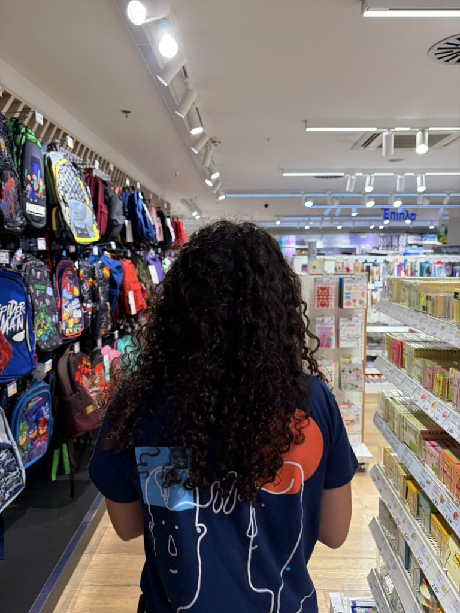

Working in retail sales for two years taught me how to communicate effectively under pressure, identify client needs rapidly, and take initiative within a team setting. This practical foundation shaped my organised and methodical approach to managing projects.
My studies in human-computer interaction (HCI) sparked a strong dedication to designing modern, accessible web applications. Combining technical project skills with thoughtful UI design ensures every system is both productive and user-friendly.